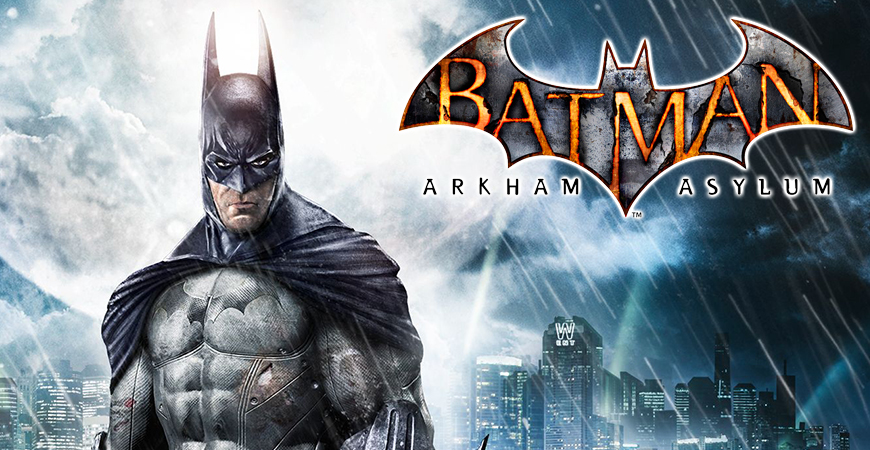

Com um misterioso incêndio em Blackgate, vários prisioneiros foram transferidos para o Asilo Arkham, onde Batman havia acabado de prender diversos criminosos como Victor Zsasz e o Espantalho. Chegando com o Coringa após ele novamente tentar aterrorizar a cidade, o Palhaço do Crime mostrou que havia planejado tudo e começou um motim dentro do manicômio. Batman agora está preso e tem que lutar contra seus piores inimigos para poder sobreviver.
Batman: Arkham Asylum é um videogame de ação-aventura e furtividade, com mecânicas investigativas e estrategistas, produzido pela Rocksteady Studios e lançado em 2009 pela Warner Bros. Interactive Entertainment para o PlayStation 3, Xbox 360, Microsoft Windows e Mac OSX. É baseado no personagem Batman, da DC Comics e suas histórias em quadrinhos. Batman: Arkham Asylum marcou o início da série Batman: Arkham, e trouxe uma história original baseada nos quadrinhos da DC, diferente de jogos do Batman e de outros super-heróis da época, que eram na maioria das vezes adaptações do personagem em adaptações cinematográficas, como Batman Begins e Batman: Eternamente. O jogo se passa no misterioso Asilo Arkham, ao longo de toda a ilha Arkham, dominada por criminosos sob o comando do Coringa durante os eventos do jogo através de um motim. Batman, encurralado na ilha, tenta impedir e prender o Coringa, e no processo descobre um enorme plano de seu arqui-inimigo. Ele teve diversas influências, mais notavelmente o romance-gráfico Arkham Asylum: A Serious House on Serious Earth, de Grant Morrison e ilustrado por Dave McKean. Quando foi anunciado, Arkham Asylum não recebeu muita expectativa por parte dos fãs e da mídia, pois a maioria de jogos baseados em figuras como o Batman e o Superman e até heróis de outras produtores como a Marvel Comics, geralmente, não tinham boa qualidade. Quando foi lançado, o jogo quebrou as expectativas e recebeu altas avaliações e foi aclamado pela crítica, sendo chamado o "melhor jogo de Batman e de super-heróis até agora". Ele concorreu ao prêmio de "Jogo do Ano" em 2009 em diversos sites e revistas especializadas, ganhando na Crispy Gamer, Games Master, e no GamesRadar do Reino-Unido. Sendo o primeiro jogo da série Arkham, o sucesso de Arkham Asylum causou três jogos principais a mais: Batman: Arkham City, Batman: Arkham Origins e Batman: Arkham Knight, além de inúmeros jogos spin-offs. O enredo de Arkham Asylum também é completado pela história em quadrinhos The Road to Arkham, que se passa mais cedo naquela noite, além de ter diversos conteúdos adicionais para baixar.
Fonte em: https://batmanarkham.fandom.com/pt-br/wiki/Batman:_Arkham_Asylum

Após o incidente no Asilo Arkham, a enorme Arkham City foi construída para alojar todos os criminosos de Gotham City. Bruce Wayne começa uma campanha contra tal prisão e é preso dentro dela, e de lá, ele deve descobrir o que Hugo Strange está planando e o que seria o Protocolo 10.
Batman: Arkham City é um jogo eletrônico de ação e aventura lançado em 2011, desenvolvido pela Rocksteady Studios e publicado pela Warner Bros. Interactive Entertainment em outubro de 2011. Foi lançado em outubro de 2011 para as versões Xbox 360 e PlayStation 3 e em novembro do mesmo ano para o Microsoft Windows. É a sequela do jogo de 2009, Batman: Arkham Asylum. O jogo foi oficialmente anunciado em 2009 na Spike Videogame Awards e quando lançou, recebeu altíssimas avaliações e foi aclamado pelas críticas como um dos melhores jogos de 2011 e de todos os tempos. Foi esse sucesso que causou a produção e lançamento de uma prequela intitulada Batman: Arkham Origins, em 2013, e uma sequela final, Batman: Arkham Knight, em 2015. Batman: Arkham City possui uma história principal, e diversas missões secundárias com seus próprios sub-enredos. A história principal do jogo gira em torno de Arkham City, uma mega prisão constituída por quatro distritos antes pertencentes a Gotham City, e que abriga todos os prisioneiros do Asilo Arkham e da Prisão de Blackgate. Batman, identidade secreta de Bruce Wayne, entra na prisão e investiga seu administrador, o misterioso Professor Hugo Strange, e descobre uma grande conspiração envolvendo velhos inimigos. O jogo rendeu diversos conteúdos adicionais, um jogo mobile chamado Batman: Arkham City Lockdown, e várias histórias em quadrinhos baseadas neste título, tais como Batman: Arkham City, Arkham City Exclusive Digital (um complemento para a HQ Arkham City em mídia digital), Caos em Arkham City e Arkham City - End Game. Sua recepção, assim como Arkham Asylum, lhe deu a oportunidade de concorrer a "Jogo do Ano" em diversas revistas, sites e especializados, ganhando a premiação na 1UP.com, junto a Portal 2 e The Elder Scrolls V: Skyrim. Uma versão para Wii U em 18 de Novembro de 2012 com o nome Batman: Arkham City Armored Edition, contando com um novo traje para Batman e Mulher Gato apelidado de Battle Armored Tech (B.A.T.), com novas funções diferentes.
Fonte em:https://batmanarkham.fandom.com/pt-br/wiki/Batman:_Arkham_City

Quando seus pais foram alvejados na sua frente, o jovem Bruce Wayne resolveu livrar Gotham City dos criminosos que lhes tiraram a vida. Ele treinou para atingir a perfeição física e mental e dominar as artes marciais, técnicas de detetive e psicologia criminal. Vestido como morcego para atacar os medos dos criminosos, o Batman combate crimes com a ajuda de aparelhos e veículos especializados, operando a partir de sua Batcaverna secreta, abaixo da Mansão Wayne. Batman liderou uma carreira de sucesso que durou doze anos como o protetor e vigilante de Gotham, mas durante os eventos de Batman: Arkham Knight, o Espantalho revelou sua identidade ao publico. Com ela sendo exposta, Batman deu início ao Protocolo Knightfall e aparentemente morreu, deixando seus antigos aprendizes no comando da proteção de Gotham. Mesmo com a morte dele, seu legado viveu junto com a população de Gotham.
Batman: Arkham Knight é um jogo eletrônico de ação-aventura produzido pela Rocksteady Studios e lançado mundialmente 23 de Junho de 2015 pela Warner Bros. Interactive Entertainment para PlayStation 4, Xbox One e Microsoft Windows. Baseado no popular super-herói da DC Comics, Batman, é o sucessor do jogo de 2013 Batman: Arkham Origins, e o quarto e último jogo da série Batman: Arkham. Arkham Knight foi o primeiro da série que teve a classificação "M" (Maiores de 17 anos) atribuída pela ESRB. Estava planejada uma versão para os sistemas OS X e Linux, mas foi cancelada em fevereiro de 2016. Escrita por Sefton Hill, Martin Lancaster e Ian Ball, a história acontece um ano depois dos eventos de Arkham City, em que Batman, no pico máximo das suas habilidades, tem de defrontar o super-vilão Espantalho, que criou um ataque a Gotham City causando a evacuação da cidade. Com a ajuda do misterioso Cavaleiro de Arkham, um personagem original criado pela Rocksteady para o jogo, Espantalho reúne os grandes inimigos de Batman, com o intuito de eliminar de uma vez o Cavaleiro das Trevas. Arkham Knight é apresentado na perspectiva de terceira pessoa, com o principal foco nas habilidades de Batman. O jogo introduz o Batmóvel, que pode ser usado para transporte e combate. O arsenal de Batman foi expandido, com um maior número de engenhocas e ataques, incluindo o uso de parceiros. O jogo também apresenta uma maior estrutura de mundo aberto, permitindo uma melhor condução e que o jogador possa completar missões secundárias sem interferir com o enredo principal. Tal como os seus antecessores, Batman: Arkham Knight foi muito bem recebido por parte da imprensa da especialidade, particularmente pela sua jogabilidade, visuais, combate e o mundo aberto da cidade de Gotham. Enquanto que o enredo teve análises variadas, as criticas foram mais dirigidas para com o uso excessivo e a ênfase dada ao Batmóvel em algumas seções. No entanto, apenas as versões para os consoles receberam boas análises; a versão para Windows tornou-se objecto de imensas criticas devido aos problemas técnicos e de desempenho, mesmo utilizando computadores com hardware topo de gama, levando a Warner Bros. e a Rocksteady a suspender temporariamente as suas vendas. Um sucesso comercial, em outubro de 2015 já tinham sido vendidas mundialmente mais de cinco milhões de cópias. A Rocksteady durante os meses seguintes ao lançamento criou muito conteúdo adicional, incluindo missões baseadas na história, mapas de desafio, fatos para Batman e para os seus aliados, assim como vários Batmóveis do universo Batman e circuitos de corrida.
Fonte em: https://batmanarkham.fandom.com/pt-br/wiki/Batman
Desenvolvido por Italo Jardim
Todos os direitos reservados a ®DC Comics
Produzido em parceria com:

![]()